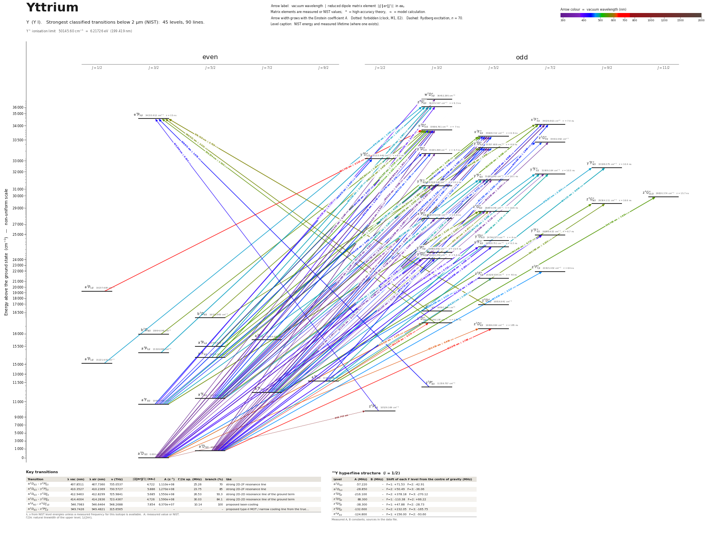

Yttrium energy level diagram
Energy levels and transitions of neutral yttrium (Y I): the 90 strongest classified lines below 2 µm from the NIST Atomic Spectra Database and the 44 levels they connect, each line with its vacuum wavelength, frequency and, for 89 of them, the reduced dipole matrix element derived from the NIST transition rate. Measured lifetimes, transition rates, hyperfine constants and isotope shifts from the literature are included, each with its citation.
Hover a line or a level to isolate it, click to keep it selected. Scroll to zoom, drag to move.

Download: diagram (PDF) diagram (SVG) transitions (CSV) levels (CSV) source code

Key transitions of yttrium
| Transition | λ vac (nm) | λ air (nm) | ν (THz) | |⟨J‖er‖J′⟩| (ea₀) | A (s⁻¹) | Γ/2π up. (MHz) | branch (%) | Use |
|---|---|---|---|---|---|---|---|---|
| a 2D3/2 – y 2F°5/2 | 407.8511 | 407.7360 | 735.0537 | 4.722 | 1.110e+08 | 25.26 | 70 | strong 2D-2F resonance line |
| a 2D5/2 – y 2F°7/2 | 410.3527 | 410.2369 | 730.5727 | 5.886 | 1.270e+08 | 23.75 | 85 | strong 2D-2F resonance line |
| a 2D5/2 – y 2D°5/2 | 412.9463 | 412.8299 | 725.9841 | 5.685 | 1.550e+08 | 26.53 | 93.3 | strong 2D-2D resonance line of the ground term |
| a 2D3/2 – y 2D°3/2 | 414.4004 | 414.2836 | 723.4367 | 4.726 | 1.590e+08 | 30.03 | 84.1 | strong 2D-2D resonance line of the ground term |
| a 4F9/2 – z 4G°11/2 | 546.7983 | 546.6464 | 548.2688 | 7.854 | 6.370e+07 | 10.14 | 100 | proposed laser-cooling |
| a 2D3/2 – z 2P°1/2 | 949.7426 | 949.4821 | 315.6565 | – | – | – | – | proposed type-II MOT / narrow cooling line from the true… |
λ, ν from NIST level energies unless a measured frequency for this isotope is available. A: measured value or NIST. Γ/2π: natural linewidth of the upper level, 1/(2πτ).
89Y hyperfine structure (I = 1/2)
| Level | A (MHz) | B (MHz) | Shift of each F level from the centre of gravity (MHz) |
|---|---|---|---|
| a 2D3/2 | -57.220 | – | F=1: +71.53 F=2: -42.91 |
| a 2D5/2 | -28.850 | – | F=2: +50.49 F=3: -36.06 |
| z 2D°5/2 | -216.100 | – | F=2: +378.18 F=3: -270.12 |
| z 2D°3/2 | 88.300 | – | F=1: -110.38 F=2: +66.22 |
| z 4D°3/2 | -38.300 | – | F=1: +47.88 F=2: -28.73 |
| z 4D°5/2 | -132.600 | – | F=2: +232.05 F=3: -165.75 |
| e 4P3/2 | -124.800 | – | F=1: +156.00 F=2: -93.60 |
Measured A, B constants; sources in the data file.
Listed Y transitions below 2 µm
| Lower level | Upper level | λ vacuum (nm) | λ air (nm) | ν (THz) | Type | |⟨J‖er‖J′⟩| (ea₀) | A (s⁻¹) | Branching (%) | Source of matrix element / A |
|---|---|---|---|---|---|---|---|---|---|
| a 2D3/2 | w 2D°3/2 | 274.3311 | 274.2500 | 1092.8123 | E1 | 0.164 NIST | 6.600e+05 NIST | – | NIST ASD (accuracy B) |
| a 2D3/2 | x 2D°3/2 | 294.9264 | 294.8402 | 1016.4991 | E1 | 1.343 measured | 3.560e+07 measured | 24.9 | Hannaford, Lowe, Grevesse, Biémont, Whaling, Astrophys. J. 261, 736 (1982), Table 1 |
| a 2D3/2 | x 2F°5/2 | 297.5454 | 297.4586 | 1007.5518 | E1 | 1.657 measured | 3.520e+07 measured | 24.3 | Hannaford, Lowe, Grevesse, Biémont, Whaling, Astrophys. J. 261, 736 (1982), Table 1 |
| a 2D5/2 | x 2F°7/2 | 298.5124 | 298.4253 | 1004.2883 | E1 | 2.241 measured | 4.780e+07 measured | 35.4 | Hannaford, Lowe, Grevesse, Biémont, Whaling, Astrophys. J. 261, 736 (1982), Table 1 |
| a 2D5/2 | x 2D°3/2 | 299.6128 | 299.5255 | 1000.5996 | E1 | 0.522 measured | 5.140e+06 measured | 3.6 | Hannaford, Lowe, Grevesse, Biémont, Whaling, Astrophys. J. 261, 736 (1982), Table 1 |
| a 2D3/2 | y 4D°5/2 | 299.7817 | 299.6943 | 1000.0359 | E1 (intercombination) | 0.819 measured | 8.410e+06 measured | 5.8 | Hannaford, Lowe, Grevesse, Biémont, Whaling, Astrophys. J. 261, 736 (1982), Table 1 |
| a 2D3/2 | y 4D°3/2 | 300.6136 | 300.5260 | 997.2686 | E1 (intercombination) | 0.506 measured | 4.780e+06 measured | 3.2 | Hannaford, Lowe, Grevesse, Biémont, Whaling, Astrophys. J. 261, 736 (1982), Table 1 |
| a 2D5/2 | x 2F°5/2 | 302.3161 | 302.2281 | 991.6523 | E1 | 0.734 measured | 6.580e+06 measured | 4.54 | Hannaford, Lowe, Grevesse, Biémont, Whaling, Astrophys. J. 261, 736 (1982), Table 1 |
| a 2D5/2 | z 2G°7/2 | 303.9353 | 303.8469 | 986.3694 | E1 | 0.240 NIST | 5.200e+05 NIST | – | NIST ASD (accuracy B+) |
| a 2D5/2 | y 4D°5/2 | 304.6249 | 304.5363 | 984.1364 | E1 (intercombination) | 0.946 measured | 1.070e+07 measured | 7.4 | Hannaford, Lowe, Grevesse, Biémont, Whaling, Astrophys. J. 261, 736 (1982), Table 1 |
| a 2D5/2 | y 4D°3/2 | 305.4839 | 305.3951 | 981.3690 | E1 (intercombination) | 0.102 NIST | 1.860e+05 NIST | 0.13 | NIST ASD (accuracy B) |
| a 2D3/2 | y 4F°5/2 | 315.6561 | 315.5648 | 949.7438 | E1 (intercombination) | 0.158 measured | 2.670e+05 measured | 0.27 | Hannaford, Lowe, Grevesse, Biémont, Whaling, Astrophys. J. 261, 736 (1982), Table 1 |
| a 2D3/2 | y 4F°3/2 | 317.3753 | 317.2835 | 944.5993 | E1 (intercombination) | 0.253 measured | 1.010e+06 measured | 1.02 | Hannaford, Lowe, Grevesse, Biémont, Whaling, Astrophys. J. 261, 736 (1982), Table 1 |
| a 2D5/2 | y 4F°7/2 | 318.6864 | 318.5942 | 940.7132 | E1 (intercombination) | 0.157 NIST | 1.920e+05 NIST | 0.13 | NIST ASD (accuracy C+) |
| a 2D5/2 | y 4F°5/2 | 321.0305 | 320.9377 | 933.8443 | E1 (intercombination) | 0.171 measured | 2.970e+05 measured | 0.3 | Hannaford, Lowe, Grevesse, Biémont, Whaling, Astrophys. J. 261, 736 (1982), Table 1 |
| a 2D5/2 | y 4F°3/2 | 322.8088 | 322.7156 | 928.6998 | E1 (intercombination) | 0.0851 measured | 1.090e+05 measured | 0.11 | Hannaford, Lowe, Grevesse, Biémont, Whaling, Astrophys. J. 261, 736 (1982), Table 1 |
| a 2D3/2 | z 4G°5/2 | 348.5044 | 348.4047 | 860.2257 | E1 (intercombination) | 0.290 NIST | 6.700e+05 NIST | 2 | NIST ASD (accuracy B+) |
| a 2D5/2 | z 4G°5/2 | 355.0671 | 354.9657 | 844.3262 | E1 (intercombination) | 0.104 NIST | 8.200e+04 NIST | 0.17 | NIST ASD (accuracy C+) |
| a 2D3/2 | x 2P°3/2 | 355.3705 | 355.2690 | 843.6053 | E1 | 1.421 measured | 2.280e+07 measured | 8.9 | Hannaford, Lowe, Grevesse, Biémont, Whaling, Astrophys. J. 261, 736 (1982), Table 1 |
| a 2D5/2 | x 2P°3/2 | 362.1969 | 362.0936 | 827.7058 | E1 | 4.685 measured | 2.340e+08 measured | 91.1 | Hannaford, Lowe, Grevesse, Biémont, Whaling, Astrophys. J. 261, 736 (1982), Table 1 |
| a 4F3/2 | w 2D°3/2 | 391.9278 | 391.8168 | 764.9176 | E1 (intercombination) | 0.723 NIST | 4.400e+06 NIST | – | NIST ASD (accuracy B+) |
| a 4F5/2 | z 4S°3/2 | 399.0908 | 398.9780 | 751.1885 | E1 | 0.944 NIST | 7.100e+06 NIST | 6.6 | NIST ASD (accuracy B) |
| a 2D3/2 | y 2D°5/2 | 404.0964 | 403.9822 | 741.8836 | E1 | 1.479 measured | 1.120e+07 measured | 6.7 | Hannaford, Lowe, Grevesse, Biémont, Whaling, Astrophys. J. 261, 736 (1982), Table 1 |
| a 2D3/2 | y 2F°5/2 | 407.8511 | 407.7360 | 735.0537 | E1 | 4.722 measured | 1.110e+08 measured | 70 | Hannaford, Lowe, Grevesse, Biémont, Whaling, Astrophys. J. 261, 736 (1982), Table 1 |
| a 2D3/2 | y 2P°3/2 | 408.4856 | 408.3703 | 733.9119 | E1 | 1.845 measured | 2.530e+07 measured | 39 | Hannaford, Lowe, Grevesse, Biémont, Whaling, Astrophys. J. 261, 736 (1982), Table 1 |
| a 2D5/2 | y 2F°7/2 | 410.3527 | 410.2369 | 730.5727 | E1 | 5.886 measured | 1.270e+08 measured | 85 | Hannaford, Lowe, Grevesse, Biémont, Whaling, Astrophys. J. 261, 736 (1982), Table 1 |
| a 2D5/2 | y 2D°5/2 | 412.9463 | 412.8299 | 725.9841 | E1 | 5.685 measured | 1.550e+08 measured | 93.3 | Hannaford, Lowe, Grevesse, Biémont, Whaling, Astrophys. J. 261, 736 (1982), Table 1 |
| a 2D3/2 | y 2D°3/2 | 414.4004 | 414.2836 | 723.4367 | E1 | 4.726 measured | 1.590e+08 measured | 84.1 | Hannaford, Lowe, Grevesse, Biémont, Whaling, Astrophys. J. 261, 736 (1982), Table 1 |
| a 2D5/2 | y 2F°5/2 | 416.8682 | 416.7507 | 719.1541 | E1 | 2.260 measured | 2.380e+07 measured | 15 | Hannaford, Lowe, Grevesse, Biémont, Whaling, Astrophys. J. 261, 736 (1982), Table 1 |
| a 2D5/2 | y 2P°3/2 | 417.5310 | 417.4134 | 718.0124 | E1 | 2.094 measured | 3.050e+07 measured | 47 | Hannaford, Lowe, Grevesse, Biémont, Whaling, Astrophys. J. 261, 736 (1982), Table 1 |
| z 2P°1/2 | e 4P3/2 | 423.2492 | 423.1300 | 708.3119 | E1 (intercombination) | 0.424 measured | 1.200e+06 measured | 1.8 | Hannaford, Lowe, Grevesse, Biémont, Whaling, Astrophys. J. 261, 736 (1982), Table 1 |
| a 2D5/2 | y 2D°3/2 | 423.7127 | 423.5934 | 707.5371 | E1 | 2.123 measured | 3.000e+07 measured | 15.9 | Hannaford, Lowe, Grevesse, Biémont, Whaling, Astrophys. J. 261, 736 (1982), Table 1 |
| a 4F3/2 | x 2D°3/2 | 435.3624 | 435.2400 | 688.6044 | E1 (intercombination) | 0.327 measured | 6.570e+05 measured | 0.46 | Hannaford, Lowe, Grevesse, Biémont, Whaling, Astrophys. J. 261, 736 (1982), Table 1 |
| a 4F5/2 | x 2D°3/2 | 438.0557 | 437.9326 | 684.3706 | E1 (intercombination) | 1.142 measured | 7.860e+06 measured | 5.5 | Hannaford, Lowe, Grevesse, Biémont, Whaling, Astrophys. J. 261, 736 (1982), Table 1 |
| z 2P°3/2 | e 4P3/2 | 438.6705 | 438.5473 | 683.4115 | E1 (intercombination) | 1.075 measured | 6.930e+06 measured | 10.4 | Hannaford, Lowe, Grevesse, Biémont, Whaling, Astrophys. J. 261, 736 (1982), Table 1 |
| a 4F7/2 | x 2F°7/2 | 439.5242 | 439.4008 | 682.0840 | E1 (intercombination) | 0.808 measured | 1.950e+06 measured | 1.44 | Hannaford, Lowe, Grevesse, Biémont, Whaling, Astrophys. J. 261, 736 (1982), Table 1 |
| a 4F3/2 | x 2F°5/2 | 441.0937 | 440.9698 | 679.6571 | E1 (intercombination) | 0.264 measured | 2.750e+05 measured | 0.19 | Hannaford, Lowe, Grevesse, Biémont, Whaling, Astrophys. J. 261, 736 (1982), Table 1 |
| a 4F5/2 | x 2F°5/2 | 443.8586 | 443.7340 | 675.4234 | E1 (intercombination) | 1.493 measured | 8.610e+06 measured | 5.94 | Hannaford, Lowe, Grevesse, Biémont, Whaling, Astrophys. J. 261, 736 (1982), Table 1 |
| a 4F9/2 | x 2F°7/2 | 444.4898 | 444.3650 | 674.4643 | E1 (intercombination) | 1.899 measured | 1.040e+07 measured | 7.7 | Hannaford, Lowe, Grevesse, Biémont, Whaling, Astrophys. J. 261, 736 (1982), Table 1 |
| a 4F3/2 | y 4D°5/2 | 446.0260 | 445.9008 | 672.1412 | E1 | 0.682 measured | 1.770e+06 measured | 1.22 | Hannaford, Lowe, Grevesse, Biémont, Whaling, Astrophys. J. 261, 736 (1982), Table 1 |
| a 4F5/2 | z 2G°7/2 | 447.3577 | 447.2322 | 670.1404 | E1 (intercombination) | 0.472 NIST | 6.300e+05 NIST | – | NIST ASD (accuracy B+) |
| a 4F7/2 | x 2F°5/2 | 447.8203 | 447.6947 | 669.4481 | E1 (intercombination) | 2.690 measured | 2.720e+07 measured | 18.8 | Hannaford, Lowe, Grevesse, Biémont, Whaling, Astrophys. J. 261, 736 (1982), Table 1 |
| a 4F3/2 | y 4D°3/2 | 447.8700 | 447.7444 | 669.3738 | E1 | 2.379 measured | 3.190e+07 measured | 21.4 | Hannaford, Lowe, Grevesse, Biémont, Whaling, Astrophys. J. 261, 736 (1982), Table 1 |
| a 4F5/2 | y 4D°5/2 | 448.8533 | 448.7274 | 667.9074 | E1 | 2.320 measured | 2.010e+07 measured | 13.9 | Hannaford, Lowe, Grevesse, Biémont, Whaling, Astrophys. J. 261, 736 (1982), Table 1 |
| a 4F3/2 | y 4D°1/2 | 448.8722 | 448.7463 | 667.8793 | E1 | 3.647 measured | 1.490e+08 measured | 100 | Hannaford, Lowe, Grevesse, Biémont, Whaling, Astrophys. J. 261, 736 (1982), Table 1 |
| a 4F5/2 | y 4D°3/2 | 450.7208 | 450.5944 | 665.1400 | E1 | 4.273 NIST | 1.010e+08 NIST | 71.8 | NIST ASD (accuracy B+) |
| a 4F7/2 | z 2G°7/2 | 451.3824 | 451.2558 | 664.1651 | E1 (intercombination) | 0.305 NIST | 2.570e+05 NIST | – | NIST ASD (accuracy B+) |
| a 4F7/2 | y 4D°5/2 | 452.9051 | 452.7781 | 661.9321 | E1 | 4.787 measured | 8.330e+07 measured | 57.5 | Hannaford, Lowe, Grevesse, Biémont, Whaling, Astrophys. J. 261, 736 (1982), Table 1 |
| a 2D3/2 | z 2F°5/2 | 464.4988 | 464.3688 | 645.4106 | E1 | 2.311 measured | 1.800e+07 measured | 72 | Hannaford, Lowe, Grevesse, Biémont, Whaling, Astrophys. J. 261, 736 (1982), Table 1 |
| a 2D5/2 | z 2F°7/2 | 467.6157 | 467.4849 | 641.1086 | E1 | 2.317 measured | 1.330e+07 measured | 85 | Hannaford, Lowe, Grevesse, Biémont, Whaling, Astrophys. J. 261, 736 (1982), Table 1 |
| a 2D5/2 | z 2F°5/2 | 476.2307 | 476.0975 | 629.5110 | E1 | 1.058 measured | 3.500e+06 measured | 14 | Hannaford, Lowe, Grevesse, Biémont, Whaling, Astrophys. J. 261, 736 (1982), Table 1 |
| a 4F7/2 | y 4F°9/2 | 478.2367 | 478.1030 | 626.8704 | E1 | 2.335 measured | 1.010e+07 measured | 10.5 | Hannaford, Lowe, Grevesse, Biémont, Whaling, Astrophys. J. 261, 736 (1982), Table 1 |
| a 4F5/2 | y 4F°7/2 | 480.0641 | 479.9300 | 624.4842 | E1 | 2.619 measured | 1.570e+07 measured | 16.5 | Hannaford, Lowe, Grevesse, Biémont, Whaling, Astrophys. J. 261, 736 (1982), Table 1 |
| a 4F3/2 | y 4F°5/2 | 482.0984 | 481.9637 | 621.8491 | E1 | 2.290 measured | 1.580e+07 measured | 16 | Hannaford, Lowe, Grevesse, Biémont, Whaling, Astrophys. J. 261, 736 (1982), Table 1 |
| a 4F9/2 | y 4F°9/2 | 484.1213 | 483.9861 | 619.2507 | E1 | 6.944 measured | 8.610e+07 measured | 89.5 | Hannaford, Lowe, Grevesse, Biémont, Whaling, Astrophys. J. 261, 736 (1982), Table 1 |
| a 4F7/2 | y 4F°7/2 | 484.7019 | 484.5665 | 618.5089 | E1 | 5.489 measured | 6.700e+07 measured | 70.3 | Hannaford, Lowe, Grevesse, Biémont, Whaling, Astrophys. J. 261, 736 (1982), Table 1 |
| a 4F5/2 | y 4F°5/2 | 485.4032 | 485.2676 | 617.6153 | E1 | 4.612 measured | 6.280e+07 measured | 63.4 | Hannaford, Lowe, Grevesse, Biémont, Whaling, Astrophys. J. 261, 736 (1982), Table 1 |
| a 4F3/2 | y 4F°3/2 | 486.1200 | 485.9843 | 616.7046 | E1 | 4.058 measured | 7.260e+07 measured | 73.3 | Hannaford, Lowe, Grevesse, Biémont, Whaling, Astrophys. J. 261, 736 (1982), Table 1 |
| a 4F5/2 | y 4F°3/2 | 489.4804 | 489.3438 | 612.4708 | E1 | 2.267 measured | 2.220e+07 measured | 22.4 | Hannaford, Lowe, Grevesse, Biémont, Whaling, Astrophys. J. 261, 736 (1982), Table 1 |
| a 4F7/2 | y 4F°5/2 | 490.1453 | 490.0084 | 611.6400 | E1 | 2.628 measured | 1.980e+07 measured | 20 | Hannaford, Lowe, Grevesse, Biémont, Whaling, Astrophys. J. 261, 736 (1982), Table 1 |
| a 2F5/2 | x 2D°3/2 | 538.2126 | 538.0629 | 557.0150 | E1 | 3.138 measured | 3.200e+07 measured | 22.4 | Hannaford, Lowe, Grevesse, Biémont, Whaling, Astrophys. J. 261, 736 (1982), Table 1 |
| a 4P5/2 | x 2D°3/2 | 542.5869 | 542.4361 | 552.5243 | E1 (intercombination) | 3.318 measured | 3.490e+07 measured | 24.4 | Hannaford, Lowe, Grevesse, Biémont, Whaling, Astrophys. J. 261, 736 (1982), Table 1 |
| a 4F9/2 | z 4G°11/2 | 546.7983 | 546.6464 | 548.2688 | E1 | 7.854 measured | 6.370e+07 measured | 100 | Hannaford, Lowe, Grevesse, Biémont, Whaling, Astrophys. J. 261, 736 (1982), Table 1 |
| a 2F5/2 | x 2F°5/2 | 546.9989 | 546.8470 | 548.0677 | E1 | 4.280 measured | 3.780e+07 measured | 26.1 | Hannaford, Lowe, Grevesse, Biémont, Whaling, Astrophys. J. 261, 736 (1982), Table 1 |
| a 2F7/2 | x 2F°7/2 | 550.4995 | 550.3466 | 544.5826 | E1 | 6.488 measured | 6.390e+07 measured | 47.3 | Hannaford, Lowe, Grevesse, Biémont, Whaling, Astrophys. J. 261, 736 (1982), Table 1 |
| a 4P5/2 | x 2F°5/2 | 551.5179 | 551.3647 | 543.5771 | E1 (intercombination) | 3.439 measured | 2.380e+07 measured | 16.4 | Hannaford, Lowe, Grevesse, Biémont, Whaling, Astrophys. J. 261, 736 (1982), Table 1 |
| a 4F7/2 | z 4G°9/2 | 552.9083 | 552.7547 | 542.2101 | E1 | 6.737 measured | 5.440e+07 measured | 90.3 | Hannaford, Lowe, Grevesse, Biémont, Whaling, Astrophys. J. 261, 736 (1982), Table 1 |
| a 2F5/2 | y 4D°5/2 | 554.6045 | 554.4505 | 540.5518 | E1 (intercombination) | 2.553 measured | 1.290e+07 measured | 8.9 | Hannaford, Lowe, Grevesse, Biémont, Whaling, Astrophys. J. 261, 736 (1982), Table 1 |
| z 2D°3/2 | e 4P3/2 | 555.2541 | 555.0999 | 539.9194 | E1 (intercombination) | 1.530 measured | 6.930e+06 measured | 10.4 | Hannaford, Lowe, Grevesse, Biémont, Whaling, Astrophys. J. 261, 736 (1982), Table 1 |
| b 2D3/2 | x 2D°3/2 | 558.2626 | 558.1077 | 537.0097 | E1 | 1.953 measured | 1.110e+07 measured | 7.8 | Hannaford, Lowe, Grevesse, Biémont, Whaling, Astrophys. J. 261, 736 (1982), Table 1 |
| a 4P5/2 | y 4D°5/2 | 559.2505 | 559.0953 | 536.0611 | E1 | 1.588 measured | 4.870e+06 measured | 3.36 | Hannaford, Lowe, Grevesse, Biémont, Whaling, Astrophys. J. 261, 736 (1982), Table 1 |
| b 2D5/2 | x 2F°7/2 | 559.5677 | 559.4124 | 535.7572 | E1 | 1.860 measured | 5.000e+06 measured | 3.7 | Hannaford, Lowe, Grevesse, Biémont, Whaling, Astrophys. J. 261, 736 (1982), Table 1 |
| a 4F9/2 | z 4G°9/2 | 560.7891 | 560.6335 | 534.5904 | E1 | 2.255 measured | 5.840e+06 measured | 9.7 | Hannaford, Lowe, Grevesse, Biémont, Whaling, Astrophys. J. 261, 736 (1982), Table 1 |
| a 4P5/2 | y 4D°3/2 | 562.1526 | 561.9966 | 533.2938 | E1 | 0.835 measured | 1.990e+06 measured | 1.33 | Hannaford, Lowe, Grevesse, Biémont, Whaling, Astrophys. J. 261, 736 (1982), Table 1 |
| a 4F3/2 | z 4G°5/2 | 563.1693 | 563.0130 | 532.3310 | E1 | 4.879 NIST | 4.500e+07 NIST | 81.9 | NIST ASD (accuracy B+) |
| b 2D5/2 | x 2D°3/2 | 563.4471 | 563.2907 | 532.0685 | E1 | 1.620 measured | 7.430e+06 measured | 5.2 | Hannaford, Lowe, Grevesse, Biémont, Whaling, Astrophys. J. 261, 736 (1982), Table 1 |
| a 4F5/2 | z 4G°5/2 | 567.6843 | 567.5268 | 528.0972 | E1 | 2.146 NIST | 8.500e+06 NIST | 15.3 | NIST ASD (accuracy B+) |
| b 2D3/2 | x 2F°5/2 | 567.7216 | 567.5641 | 528.0624 | E1 | 1.509 measured | 4.200e+06 measured | 2.9 | Hannaford, Lowe, Grevesse, Biémont, Whaling, Astrophys. J. 261, 736 (1982), Table 1 |
| z 4D°3/2 | e 4P3/2 | 569.5212 | 569.3632 | 526.3938 | E1 | 2.021 measured | 1.120e+07 measured | 16.8 | Hannaford, Lowe, Grevesse, Biémont, Whaling, Astrophys. J. 261, 736 (1982), Table 1 |
| a 2F7/2 | y 4D°5/2 | 571.6531 | 571.4945 | 524.4307 | E1 (intercombination) | 1.062 measured | 2.040e+06 measured | 1.41 | Hannaford, Lowe, Grevesse, Biémont, Whaling, Astrophys. J. 261, 736 (1982), Table 1 |
| a 4F7/2 | z 4G°5/2 | 574.1810 | 574.0217 | 522.1219 | E1 | 0.449 NIST | 3.600e+05 NIST | 0.66 | NIST ASD (accuracy B+) |
| z 4D°5/2 | e 4P3/2 | 576.7255 | 576.5656 | 519.8183 | E1 | 3.758 measured | 3.730e+07 measured | 56 | Hannaford, Lowe, Grevesse, Biémont, Whaling, Astrophys. J. 261, 736 (1982), Table 1 |
| a 2D3/2 | z 2D°3/2 | 619.3432 | 619.1718 | 484.0490 | E1 | 1.474 measured | 4.630e+06 measured | 81 | Hannaford, Lowe, Grevesse, Biémont, Whaling, Astrophys. J. 261, 736 (1982), Table 1 |
| a 2D3/2 | z 2D°5/2 | 622.4300 | 622.2578 | 481.6485 | E1 | 0.646 measured | 5.840e+05 measured | 10.8 | Hannaford, Lowe, Grevesse, Biémont, Whaling, Astrophys. J. 261, 736 (1982), Table 1 |
| a 2D5/2 | z 2D°3/2 | 640.3776 | 640.2006 | 468.1495 | E1 | 0.373 measured | 2.690e+05 measured | 4.7 | Hannaford, Lowe, Grevesse, Biémont, Whaling, Astrophys. J. 261, 736 (1982), Table 1 |
| a 2D5/2 | z 2D°5/2 | 643.6782 | 643.5004 | 465.7490 | E1 | 1.788 measured | 4.050e+06 measured | 75 | Hannaford, Lowe, Grevesse, Biémont, Whaling, Astrophys. J. 261, 736 (1982), Table 1 |
| a 2G9/2 | x 2F°7/2 | 643.8948 | 643.7169 | 465.5923 | E1 | 2.263 measured | 4.860e+06 measured | 3.6 | Hannaford, Lowe, Grevesse, Biémont, Whaling, Astrophys. J. 261, 736 (1982), Table 1 |
| b 2D3/2 | y 4F°3/2 | 644.5626 | 644.3845 | 465.1099 | E1 (intercombination) | 1.295 measured | 3.170e+06 measured | 3.2 | Hannaford, Lowe, Grevesse, Biémont, Whaling, Astrophys. J. 261, 736 (1982), Table 1 |
| a 2P1/2 | x 2D°3/2 | 681.7026 | 681.5145 | 439.7701 | E1 | 2.113 measured | 7.140e+06 measured | 5 | Hannaford, Lowe, Grevesse, Biémont, Whaling, Astrophys. J. 261, 736 (1982), Table 1 |
| a 2D3/2 | z 2P°1/2 | 949.7426 | 949.4821 | 315.6565 | E1 | – | – | – | – |
Reduced dipole matrix elements follow the convention A = ω³|d|²/(3πε₀ħc³(2J′+1)), with J′ the upper level. Tags show where a number comes from: measured, NIST compilation, high-accuracy theory, or a model calculation.
Y energy levels
Y⁺ ionisation limit 50145.60 cm⁻¹ = 6.21726 eV (199.419 nm)
Sources
- Gough, Hannaford, McLean, J. Phys. B 21, 547 (1988), as compiled in R. L. Kurucz ab390089…
- Hannaford, Lowe, Grevesse, Biémont, Whaling, Astrophys. J. 261, 736 (1982), Table 1
- Hannaford, Lowe, Grevesse, Biémont, Whaling, Astrophys. J. 261, 736 (1982), Table 1. Note…
- Hannaford, Lowe, Grevesse, Biémont, Whaling, Astrophys. J. 261, 736 (1982), Table 1. Note…
- Hannaford, Lowe, Grevesse, Biémont, Whaling, Astrophys. J. 261, 736 (1982), Table 1. Note…
- McLean, Hannaford, Bachor, Fisk, Sandeman, Z. Phys. D 1, 253 (1986) [Kurucz file prints y…
- NIST ASD
- NIST ASD level energies
Lifetimes, branching ratios and f values transcribed from the scanned Table 1 of Hannaford et al. 1982 (ADS scan); each transcribed line was checked by (i) matching upper minus lower NIST energies to the printed air wavelength within 0.3 cm^-1 and (ii) comparing the printed f with the log gf of the same source in the Kurucz file gf3900hlgb.lab. A_s values are derived as branching ratio / lifetime (uncertainty combines both). NIST ASD already lists A for most of these Y I lines (very likely from this same paper - not verified); the new information here is the level lifetimes, the branching ratios and their uncertainties. Hyperfine A constants (89Y, I = 1/2, no B) are second-hand from the Kurucz compilation and carry no uncertainties. Level labels and energies are those of the NIST levels file.
Atoms with measured data
- Lithium-632 levels, 85 lines
- Lithium-732 levels, 85 lines
- Beryllium-917 levels, 26 lines
- Sodium-2336 levels, 106 lines
- Magnesium-2418 levels, 61 lines
- Magnesium-2518 levels, 61 lines
- Potassium-3934 levels, 84 lines
- Potassium-4034 levels, 84 lines
- Potassium-4134 levels, 84 lines
- Calcium-4035 levels, 61 lines
- Calcium-4335 levels, 61 lines
- Chromium-5256 levels, 87 lines
- Chromium-5356 levels, 87 lines
- Rubidium-8536 levels, 94 lines
- Rubidium-8736 levels, 94 lines
- Strontium-8440 levels, 70 lines
- Strontium-8640 levels, 70 lines
- Strontium-8740 levels, 70 lines
- Strontium-8840 levels, 70 lines
- Cadmium-11115 levels, 21 lines
- Cadmium-11315 levels, 21 lines
- Cadmium-11415 levels, 21 lines
- Caesium-13331 levels, 79 lines
- Barium-13744 levels, 89 lines
- Barium-13844 levels, 89 lines
- Dysprosium-16139 levels, 55 lines
- Dysprosium-16239 levels, 55 lines
- Dysprosium-16339 levels, 55 lines
- Dysprosium-16439 levels, 55 lines
- Erbium-16673 levels, 90 lines
- Erbium-16773 levels, 90 lines
- Erbium-16873 levels, 90 lines
- Thulium-16972 levels, 73 lines
- Ytterbium-17118 levels, 26 lines
- Ytterbium-17318 levels, 26 lines
- Ytterbium-17418 levels, 26 lines
- Mercury-19927 levels, 47 lines
- Mercury-20127 levels, 47 lines
- Mercury-20227 levels, 47 lines